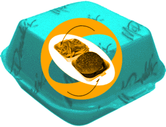
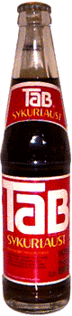

|
|

that I thought had disappeared with my Schwinn Scrambler...
|  |
McDonald's styrofoam clamshell burger box
|
|
TAB The aftertaste alone will ensure you'll never forget TAB. A flavor that is best described as, well, TABBY. I don't know that it's unavailable in the states, but I sure haven't seen it in a while, especially in nice bottles like these. |

|
| archives | main | chat |
* |
dummytalk | outings | little things |